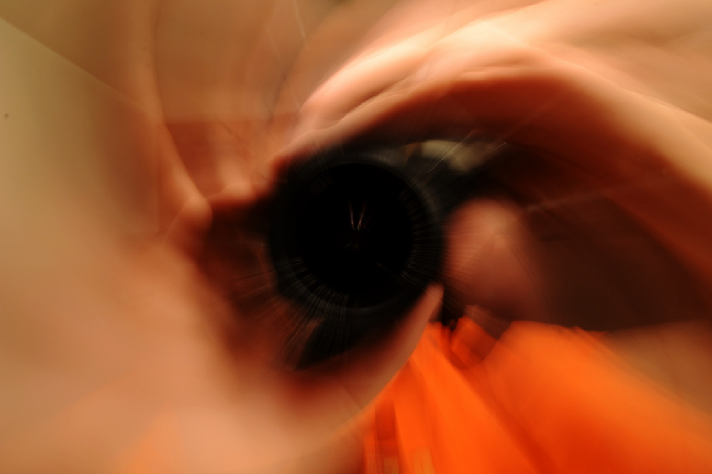

|

Self-portrait, 2 second exposure, taken while zooming towards a mirror.
|
Photography is a personal passion and hobby of mine. I received my first camera for Christmas in 2010 (a Powershot SX130) just before my semester abroad in England. I took a formidable number of photos during that experience, and started a 365 project, in which I take one photo every day for a year. I have compiled the full results of that endeavor into this album. Though class and traveling often made it very difficult to continue, I completed the project successfully on January 22nd, 2012. This was an excellent way to discover photography, learn about composition, and document my year.
I currently use a Nikon D3100 as my primary camera. Check out a gallery of some of my photos below. All photos used on the website are my own, as well, unless specifically noted otherwise. Since completing my 365 project, Doug Auerbach and began a weekly photography challenge at fictivefaction.com. |